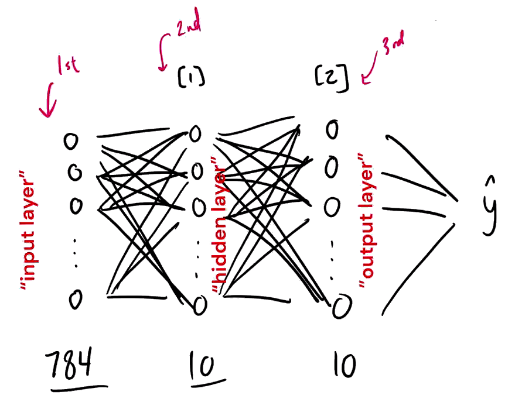
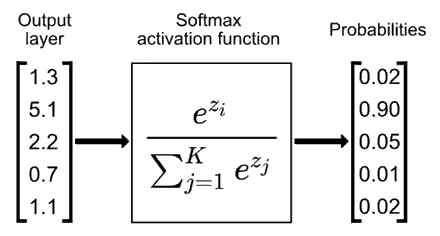
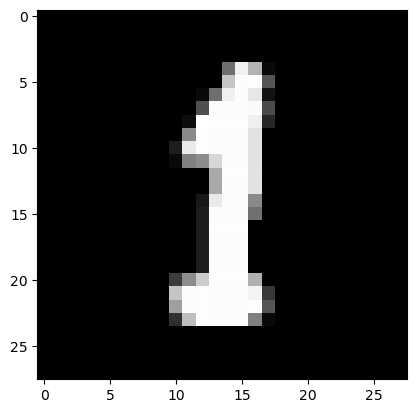
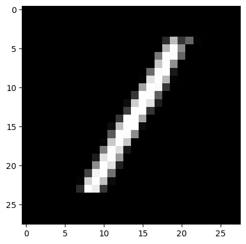
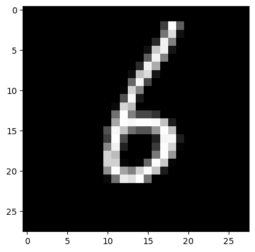
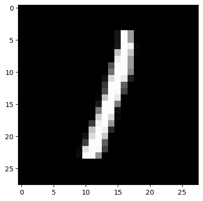

前言
教你怎么只用 numpy 和数学方法构建一个神经网络，而不是使用 Tensorflow 或 Pytorch。
相关资源
-
Building a neural network FROM SCRATCH (no Tensorflow/Pytorch, just numpy & math) - YouTube
- 这个视频有点坑，照着视频写代码会有很多错误😅
-
Simple MNIST NN from scratch (numpy, no TF/Keras) | Kaggle
- 原作者的笔记，还比较靠谱
内容
导入相关库
1 | |
读取数据集
1 | |
1 | |
(42000, 785)
数组形状:, 说明:
-
行, 表示这个数据集有 张图片
-
列, 表示数据集中每张图片大小为 , 外带 个标签,
将数据集分为训练集和测试集
1 | |
定义相关函数
Our NN will have a simple two-layer architecture. Input layer will have units corresponding to the pixels in each input image. A hidden layer will have units with ReLU activation, and finally our output layer will have units corresponding to the ten digit classes with softmax activation.
我们的神经网络将有一个简单的两层结构。输入层 将有 个单元，对应于每个 输入图像中的 个像素。隐藏层 将有 个单元，用 ReLU 激活，最后我们的输出层 将有 个单元，对应于用 softmax 激活的 个数字类别。
Vars and shapes

Forward prop
- : 784 x m
- : 10 x m
- : 10 x 784 (as )
- : 10 x 1
- : 10 x m
- : 10 x 10 (as )
- : 10 x 1
Backprop
- : 10 x m ()
- : 10 x 10
- : 10 x 1
- : 10 x m ()
- : 10 x 10
- : 10 x 1
初始化参数
使初始参数随机在 [-0.5, 0.5) 之间
通过 np.random.rand() 可以返回一个或一组服从“0 ~ 1”均匀分布的随机样本值。随机样本取值范围是 [0, 1)，不包括 1。
1 | |
激活函数: ReLU
1 | |
Softmax
Softmax 函数将各个输出节点的输出值范围映射到 [0, 1]，并且约束各个输出节点的输出值的和为 1。
，其中 为第 个节点的输出值， 为输出结点的个数，即分类的类别个数。通过 Softmax 函数就可以将多分类的输出值转换为范围在 [0, 1] 和为 1 的概率分布。

1 | |
前向传播
1 | |
ReLU 函数的导数，用于梯度下降
1 | |
独热编码
将标签 Y 转为独热编码：
1 | |
反向传播
1 | |
调整参数
根据学习率 alpha 调整参数：
1 | |
预测结果
numpy.argmax() 函数返回特定轴上数组的最大元素的索引，选取可能性最大的分类结果作为最终的分类结果。
1 | |
计算准确率
1 | |
梯度下降
1 | |
训练神经网络
最后得到的准确率以及神经网络的各个参数:
1 | |
Iteration: 0
[2 2 9 ... 9 2 2] [6 1 2 ... 5 3 1]
Accuray: 0.13534146341463416
Iteration: 10
[2 6 9 ... 3 6 2] [6 1 2 ... 5 3 1]
Accuray: 0.2577560975609756
Iteration: 20
[2 6 9 ... 3 1 2] [6 1 2 ... 5 3 1]
Accuray: 0.3676341463414634
Iteration: 30
[2 6 9 ... 3 1 1] [6 1 2 ... 5 3 1]
Accuray: 0.4432439024390244
Iteration: 40
[2 1 9 ... 3 1 1] [6 1 2 ... 5 3 1]
Accuray: 0.495390243902439
Iteration: 50
[2 1 8 ... 3 9 1] [6 1 2 ... 5 3 1]
Accuray: 0.5352682926829269
Iteration: 60
[2 1 8 ... 9 9 1] [6 1 2 ... 5 3 1]
Accuray: 0.568390243902439
Iteration: 70
[2 1 8 ... 9 9 1] [6 1 2 ... 5 3 1]
Accuray: 0.5975609756097561
Iteration: 80
[2 1 8 ... 9 9 1] [6 1 2 ... 5 3 1]
Accuray: 0.6207317073170732
Iteration: 90
[2 1 8 ... 9 9 1] [6 1 2 ... 5 3 1]
Accuray: 0.6396829268292683
Iteration: 100
[2 1 8 ... 5 9 1] [6 1 2 ... 5 3 1]
Accuray: 0.6570243902439025
Iteration: 110
[2 1 8 ... 5 9 1] [6 1 2 ... 5 3 1]
Accuray: 0.672829268292683
Iteration: 120
[2 1 8 ... 5 9 1] [6 1 2 ... 5 3 1]
Accuray: 0.6867560975609757
Iteration: 130
[2 1 8 ... 5 9 1] [6 1 2 ... 5 3 1]
Accuray: 0.6998048780487804
Iteration: 140
[2 1 8 ... 5 3 1] [6 1 2 ... 5 3 1]
Accuray: 0.710390243902439
Iteration: 150
[2 1 8 ... 5 3 1] [6 1 2 ... 5 3 1]
Accuray: 0.7207560975609756
Iteration: 160
[2 1 8 ... 5 3 1] [6 1 2 ... 5 3 1]
Accuray: 0.7307560975609756
Iteration: 170
[2 1 8 ... 5 3 1] [6 1 2 ... 5 3 1]
Accuray: 0.7396829268292683
Iteration: 180
[2 1 8 ... 5 3 1] [6 1 2 ... 5 3 1]
Accuray: 0.7484634146341463
Iteration: 190
[2 1 8 ... 5 3 1] [6 1 2 ... 5 3 1]
Accuray: 0.7559512195121951
Iteration: 200
[2 1 8 ... 5 3 1] [6 1 2 ... 5 3 1]
Accuray: 0.7630975609756098
Iteration: 210
[2 1 8 ... 5 3 1] [6 1 2 ... 5 3 1]
Accuray: 0.7700731707317073
Iteration: 220
[2 1 8 ... 5 3 1] [6 1 2 ... 5 3 1]
Accuray: 0.7764878048780488
Iteration: 230
[2 1 8 ... 5 3 1] [6 1 2 ... 5 3 1]
Accuray: 0.7819024390243903
Iteration: 240
[4 1 8 ... 5 3 1] [6 1 2 ... 5 3 1]
Accuray: 0.7870731707317074
Iteration: 250
[4 1 8 ... 5 3 1] [6 1 2 ... 5 3 1]
Accuray: 0.7922926829268293
Iteration: 260
[4 1 8 ... 5 3 1] [6 1 2 ... 5 3 1]
Accuray: 0.7969512195121952
Iteration: 270
[4 1 8 ... 5 3 1] [6 1 2 ... 5 3 1]
Accuray: 0.8013414634146342
Iteration: 280
[4 1 8 ... 5 3 1] [6 1 2 ... 5 3 1]
Accuray: 0.805439024390244
Iteration: 290
[4 1 8 ... 5 3 1] [6 1 2 ... 5 3 1]
Accuray: 0.8083414634146342
Iteration: 300
[4 1 8 ... 5 3 1] [6 1 2 ... 5 3 1]
Accuray: 0.8113658536585366
Iteration: 310
[4 1 8 ... 5 3 1] [6 1 2 ... 5 3 1]
Accuray: 0.8147560975609756
Iteration: 320
[4 1 8 ... 5 3 1] [6 1 2 ... 5 3 1]
Accuray: 0.818
Iteration: 330
[4 1 8 ... 5 3 1] [6 1 2 ... 5 3 1]
Accuray: 0.8207073170731707
Iteration: 340
[4 1 8 ... 5 3 1] [6 1 2 ... 5 3 1]
Accuray: 0.8234634146341463
Iteration: 350
[4 1 8 ... 5 3 1] [6 1 2 ... 5 3 1]
Accuray: 0.8260975609756097
Iteration: 360
[4 1 8 ... 5 3 1] [6 1 2 ... 5 3 1]
Accuray: 0.8283170731707317
Iteration: 370
[4 1 8 ... 5 3 1] [6 1 2 ... 5 3 1]
Accuray: 0.8308292682926829
Iteration: 380
[4 1 8 ... 5 3 1] [6 1 2 ... 5 3 1]
Accuray: 0.8332682926829268
Iteration: 390
[4 1 8 ... 5 3 1] [6 1 2 ... 5 3 1]
Accuray: 0.8349512195121951
Iteration: 400
[4 1 8 ... 5 3 1] [6 1 2 ... 5 3 1]
Accuray: 0.8371463414634146
Iteration: 410
[4 1 8 ... 5 3 1] [6 1 2 ... 5 3 1]
Accuray: 0.8391463414634146
Iteration: 420
[4 1 8 ... 5 3 1] [6 1 2 ... 5 3 1]
Accuray: 0.8407073170731707
Iteration: 430
[4 1 8 ... 5 3 1] [6 1 2 ... 5 3 1]
Accuray: 0.8424146341463414
Iteration: 440
[4 1 8 ... 5 3 1] [6 1 2 ... 5 3 1]
Accuray: 0.8438780487804878
Iteration: 450
[4 1 8 ... 5 3 1] [6 1 2 ... 5 3 1]
Accuray: 0.845390243902439
Iteration: 460
[4 1 8 ... 5 3 1] [6 1 2 ... 5 3 1]
Accuray: 0.8467317073170731
Iteration: 470
[4 1 8 ... 5 3 1] [6 1 2 ... 5 3 1]
Accuray: 0.8479756097560975
Iteration: 480
[4 1 8 ... 5 3 1] [6 1 2 ... 5 3 1]
Accuray: 0.848780487804878
Iteration: 490
[4 1 8 ... 5 3 1] [6 1 2 ... 5 3 1]
Accuray: 0.8501219512195122
最后得到 85.01% 的准确率。
训练结果可视化
将训练好的模型做出预测
1 | |
1 | |
Let’s look at a couple of examples:
1 | |
Prediction: [1]
Label: 1

Prediction: [1]
Label: 1

Prediction: [6]
Label: 6

Prediction: [1]
Label: 1

将训练结果用于验证集
1 | |
[6 3 3 4 3 5 9 2 2 0 6 4 9 5 9 4 1 2 7 9 0 0 3 1 1 2 5 1 0 6 8 4 6 4 1 1 0
8 3 1 8 4 6 0 0 8 6 0 2 7 9 1 7 8 6 3 3 0 6 1 0 9 6 9 6 4 4 4 4 0 0 7 1 6
6 0 6 4 7 9 6 1 6 1 5 5 0 2 9 9 3 9 4 9 7 7 9 9 1 1 1 6 0 8 3 7 8 6 0 2 5
8 6 2 3 2 5 0 6 7 5 4 1 2 9 3 2 6 6 9 5 6 2 1 2 7 3 4 3 2 6 5 2 5 2 6 1 8
1 7 4 8 4 1 2 2 0 1 8 1 5 2 6 8 5 7 8 1 0 0 0 9 2 7 5 6 5 6 9 7 4 9 4 6 7
7 3 7 4 2 1 0 7 7 5 8 9 0 3 6 5 8 6 8 1 3 7 5 5 7 9 1 9 8 1 6 0 3 0 8 9 1
1 7 9 4 1 9 3 3 1 6 0 2 8 2 4 6 8 1 0 9 6 3 3 2 6 1 4 0 8 2 7 0 2 2 1 2 7
3 1 1 2 2 8 9 5 1 3 9 7 2 4 4 4 3 7 3 8 2 7 8 1 5 9 7 5 5 1 3 1 9 4 7 7 9
4 1 4 7 9 2 9 3 1 2 7 7 0 3 3 8 7 5 6 7 9 4 7 3 3 9 2 3 2 8 9 2 3 6 0 5 4
3 2 7 0 4 2 5 4 8 9 9 2 2 7 8 4 1 6 3 2 9 6 2 4 3 7 3 6 6 4 5 1 2 0 9 1 5
5 6 9 5 8 5 6 8 9 0 9 8 6 0 7 8 0 5 0 3 2 3 3 9 4 1 4 6 6 9 6 1 3 3 3 0 6
5 8 0 1 6 5 6 1 8 9 8 0 2 1 3 3 9 9 6 2 9 8 2 3 6 5 6 9 7 0 7 4 8 3 4 9 9
4 3 2 0 2 4 5 8 9 9 5 0 7 3 0 4 9 1 2 1 7 7 6 2 2 0 6 1 9 8 8 0 0 1 9 3 9
8 4 8 8 1 4 2 0 1 3 5 1 8 8 3 9 7 1 1 2 6 2 6 1 7 1 2 5 8 0 3 0 9 5 8 9 0
0 8 1 9 3 1 4 4 4 9 7 2 8 1 5 5 8 5 4 4 1 8 5 6 1 1 9 2 8 3 7 5 7 4 9 4 3
6 7 9 0 8 0 1 7 2 8 7 1 3 8 4 4 1 1 9 7 1 8 4 4 0 3 3 2 6 8 8 7 7 7 5 3 0
4 5 5 7 2 3 0 1 7 1 2 8 0 8 0 6 6 6 6 6 4 5 5 8 0 1 3 5 7 7 4 8 6 9 1 2 4
4 4 6 5 0 2 3 1 3 8 1 4 4 7 9 9 9 6 0 5 9 9 6 9 6 4 3 1 1 0 0 5 9 6 4 1 0
1 7 9 9 1 1 1 4 4 3 8 2 1 0 8 5 0 9 0 2 8 5 2 0 3 7 6 3 0 4 3 9 2 5 2 3 2
4 4 6 7 1 6 7 1 7 0 3 7 3 6 2 8 2 1 6 4 1 5 8 6 8 7 5 1 6 8 3 1 8 2 9 1 8
6 7 0 4 2 6 8 9 7 2 8 6 4 2 6 3 8 5 1 8 3 3 0 1 4 1 0 9 1 7 3 6 0 4 2 1 7
1 0 0 0 2 0 9 7 9 8 4 3 6 6 9 0 5 8 5 0 6 3 1 9 2 5 2 7 4 8 6 7 7 9 3 9 4
3 6 3 5 2 1 4 5 5 9 6 5 1 8 5 2 2 2 0 5 8 6 2 7 7 5 2 4 0 2 6 4 2 4 7 9 8
3 6 0 2 8 9 4 6 6 8 7 2 2 7 2 0 2 9 5 2 1 3 7 6 2 0 7 4 7 6 0 6 6 0 1 5 1
2 9 3 9 8 2 9 6 5 4 9 3 7 8 1 8 4 7 7 0 2 3 5 5 7 5 3 4 9 0 8 2 4 3 0 9 7
0 2 3 7 5 2 0 2 7 5 9 6 8 9 1 2 7 6 0 1 4 6 4 3 8 4 2 6 1 0 4 7 3 0 7 2 5
5 1 8 6 4 6 1 0 6 6 1 8 1 3 9 9 8 0 4 4 4 7 0 1 0 9 0 5 4 1 5 4 4 7 0 4 7
1] [6 3 3 4 3 5 9 2 9 0 6 4 9 5 9 4 1 2 7 9 0 0 3 1 1 2 5 1 2 6 8 2 6 4 1 1 0
8 3 1 2 4 6 0 0 8 6 0 2 7 9 1 7 8 6 3 3 0 6 1 0 9 0 9 6 4 4 4 4 0 0 7 1 6
6 0 6 4 7 9 6 1 6 1 5 5 0 2 9 9 3 9 4 4 7 7 9 9 1 1 1 6 0 8 3 7 8 6 0 2 0
8 6 4 3 3 5 0 6 7 5 4 1 2 4 3 2 6 6 9 5 6 2 1 2 7 3 8 9 2 6 5 2 5 2 6 1 9
1 7 4 8 4 1 5 2 0 1 8 1 3 2 5 8 5 7 5 1 0 0 0 9 2 7 5 6 9 6 7 7 4 9 4 6 7
7 3 7 4 2 1 0 7 7 5 5 9 0 3 6 5 3 6 8 1 3 9 5 5 7 4 1 4 5 8 6 0 3 0 5 9 1
7 9 3 4 7 9 3 3 1 6 0 2 5 2 4 0 8 1 2 9 6 3 8 2 6 1 9 0 8 3 7 0 8 2 1 2 7
3 1 1 2 2 8 7 5 1 3 9 7 3 4 4 4 3 7 8 8 7 7 3 1 5 9 7 5 5 1 3 1 9 4 7 2 9
4 1 4 7 9 2 9 3 1 2 7 7 0 9 8 8 7 5 6 7 5 4 7 3 3 9 2 3 2 8 9 2 3 6 0 5 4
3 2 7 0 4 2 5 4 8 9 9 2 2 7 4 4 1 6 3 6 4 6 2 4 8 7 3 6 6 2 5 1 2 0 4 3 3
5 6 9 5 8 5 6 8 9 8 9 8 6 5 7 9 0 5 0 8 2 3 9 4 4 1 4 6 6 9 6 1 3 3 3 0 6
5 3 0 1 4 5 6 1 7 9 8 6 2 1 3 3 9 9 8 7 9 8 4 3 6 5 6 9 7 0 3 9 8 3 4 9 9
4 3 2 0 3 4 5 8 9 9 0 0 7 5 0 4 8 1 2 1 7 7 6 2 2 0 6 1 9 5 5 0 4 8 4 5 9
2 4 8 8 5 4 2 0 1 1 5 1 8 8 3 9 7 1 1 8 6 2 6 1 9 1 3 5 8 6 3 0 9 5 2 9 0
0 8 1 9 3 1 4 4 6 9 7 2 8 1 5 5 8 5 4 4 2 1 5 6 1 1 9 2 8 3 7 5 6 4 9 4 3
6 7 9 0 8 0 1 7 2 8 9 1 3 8 4 4 1 1 9 7 1 8 4 4 0 3 3 2 6 8 8 7 7 7 5 3 0
4 7 5 7 2 3 0 1 7 1 2 8 0 8 0 6 2 6 5 6 4 5 5 8 0 1 5 5 7 7 4 8 6 9 1 2 4
4 4 6 5 0 6 5 1 3 8 1 4 4 7 8 9 9 6 0 5 9 9 6 9 8 4 9 1 1 0 0 5 9 6 4 1 7
1 7 7 9 1 1 1 4 5 3 8 4 1 0 8 5 0 9 0 6 8 8 2 0 3 7 6 3 0 4 3 9 3 5 7 3 3
4 4 6 7 1 6 7 1 7 0 3 7 3 6 1 2 2 1 6 4 1 5 8 5 8 7 5 5 6 8 3 1 8 6 8 1 8
6 7 0 4 2 6 8 7 7 2 8 6 4 3 6 3 8 5 1 8 3 3 0 1 4 1 0 7 1 7 3 6 0 4 3 1 7
1 0 0 0 2 0 9 7 4 8 4 3 8 6 4 0 5 8 5 0 6 3 1 9 2 5 9 7 4 5 6 7 2 9 3 9 4
3 6 6 5 9 1 4 5 5 9 2 5 1 8 5 2 2 2 0 3 5 6 2 7 7 5 7 9 0 2 6 8 8 4 7 9 8
5 6 0 6 8 7 4 8 6 9 7 2 2 7 2 0 2 9 5 1 1 3 4 6 2 0 7 4 7 6 0 6 6 0 1 5 1
2 9 3 9 9 2 9 6 5 4 4 7 7 8 1 8 4 7 7 0 8 3 5 5 7 3 3 4 9 0 8 2 4 3 0 9 7
0 2 3 7 5 2 0 2 7 5 9 6 8 9 1 2 8 6 0 1 4 2 4 3 8 4 2 6 1 0 4 7 3 0 3 2 5
0 1 8 6 4 6 1 0 6 6 1 8 1 5 9 9 8 2 4 4 4 7 0 1 0 9 0 5 4 1 5 4 4 7 0 4 7
8]
0.845
Still 84% accuracy, so our model generalized from the training data pretty well.